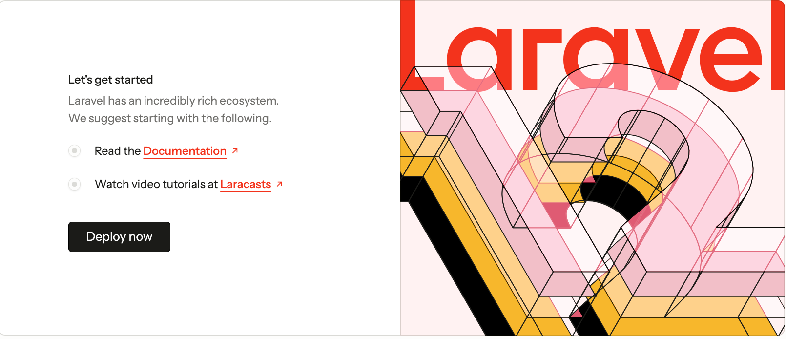
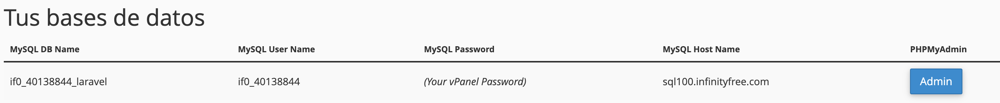
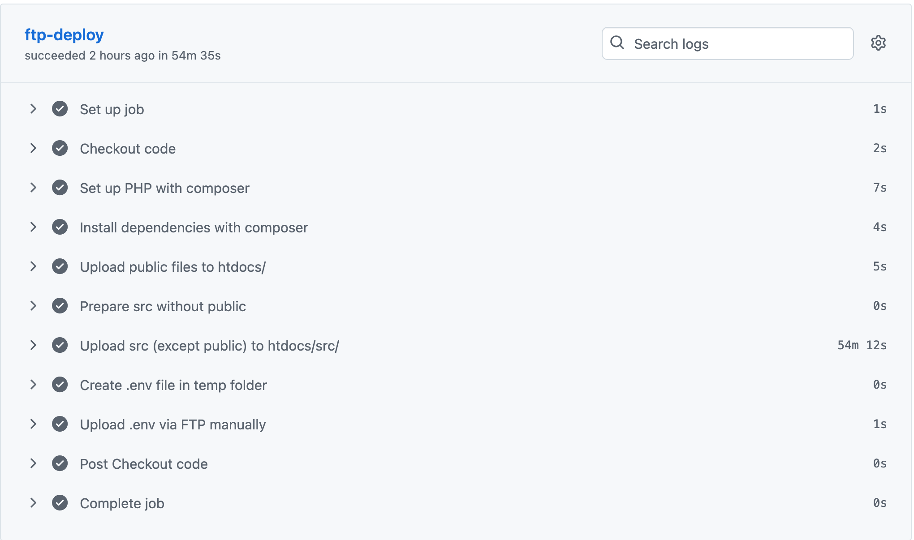
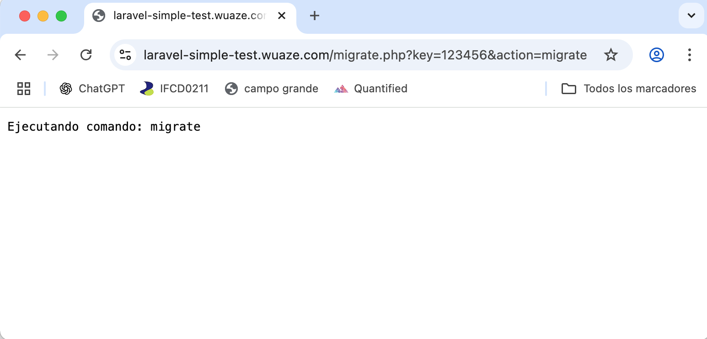
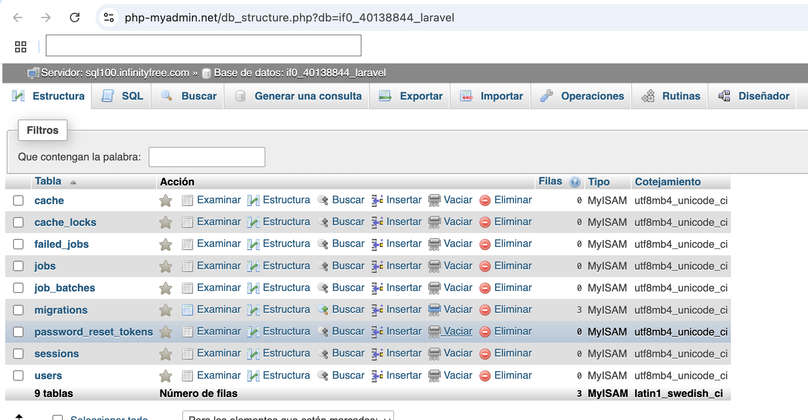
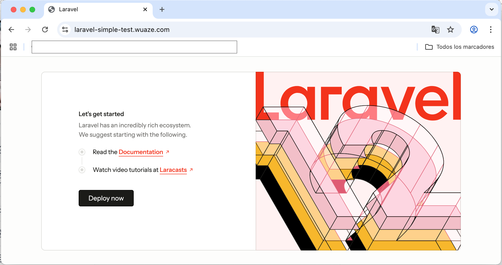

Aplicación completa con estructura de laravel¶
En esta sección, vamos a crear una aplicación completa de Laravel, con su estructura de carpetas y archivos necesarios para su funcionamiento. Vamos a realizar el despliegue en un servidor remoto utilizando GitHub Actions y configurando los secretos necesarios para que la aplicación funcione correctamente.
EL proceso va a ser muy similar al que hemos visto en la unidad anterior, pero con algunas diferencias debido a la estructura de Laravel y a los archivos necesarios para su funcionamiento.
Requisitos previos¶
Antes de comenzar, necesitamos tener instalado Docker y Docker Compose en nuestro sistema. También necesitamos tener una cuenta en GitHub para poder utilizar GitHub Actions y un servidor remoto donde desplegar la aplicación. En este caso, utilizaremos un servidor gratuito de InfinityFree, pero se puede utilizar cualquier otro servidor que soporte PHP, tenga acceso a una base de datos MySQL y conexión FTP.
Clonado o creación del proyecto laravel¶
Como vimos en los primeros temas, vamos a arrancar el entorno de desarrollo, Instalaremos Laravel y comprobar que todo funciona correctamente en local antes de realizar el despliegue en el servidor remoto.
Podéis acudir al tema 2, puntos 2.2, 2.3 y 2.4 para ver como crear el entorno de desarrollo con Docker, instalar Laravel y comprobar que todo funciona correctamente en local.
También podéis descargar el proyecto inicial:
Ficheros a eliminar
Si habéis clonado el proyecto lo primero que debéis eliminar son los ficheros *.txtque encontraréis en las carpetas mysql/data/ y 'mysql/tmp/'. Estos ficheros están únicamente para que al clonar el proyecto se suban las carpetas ya que si están vacías git no las sube.
Crear el entorno de desarrollo¶
Creamos el entorno de desarrollo:
Y accedemos al contenedor, para instalar las dependencias de Laravel con Composer:
Error de timeout
Si al ejecutar el comando anterior, nos da un error de timeout, es posible que sea debido a que Docker no tiene suficiente memoria asignada. Para solucionarlo, podemos aumentar la memoria asignada a Docker desde la configuración de Docker Desktop. Lo ideal es asignar al menos 4 GB de memoria.
Crear y configurar la base de datos¶
Creamos la base de datos laravel y le damos permisos al usuario alumno si este no los tiene ya creados:
Para conectar:
# la contraseña de `root` con la configuración del curso es 'administrador'
docker compose exec mysql mysql -u root -p
CREATE DATABASE IF NOT EXISTS laravel;
GRANT ALL PRIVILEGES ON *.* TO 'alumno'@'%' WITH GRANT OPTION;
FLUSH PRIVILEGES;
Crear y modificar el fichero .env¶
Lo primero será entrar en el fichero .env y configurar los datos de conexión a la base de datos. En este caso, como estamos en local, utilizaremos los datos que tenemos configurados en el archivo.
Entramos en el contenedor php:
docker compose exec php bash
# copiamos el fichero .env.example a .env
cp .env.example .env
# recuerda que nunca se debe subir el fichero .env a un repositorio público
# Generamos la clave de la aplicación
php artisan key:generate
Modificamos el fichero .env, con la siguiente configuración (la Key es la que nos ha generado el comando anterior, no hay que copiar la que aparece aquí):
APP_NAME=Laravel
APP_ENV=local
APP_KEY=base64:xxxxxxxxxxxxxxxxxxxxxxxxxxxxxxxxxxxxxxxxxxx=
APP_DEBUG=true
APP_URL=http://localhost:8080
# Base de datos ........
DB_CONNECTION=mysql
DB_HOST=mysql
DB_PORT=3306
DB_DATABASE=laravel
DB_USERNAME=alumno
DB_PASSWORD=alumno
Migraciones¶
Hacemos la migración de la base de datos:
Verificar que todo funciona correctamente¶
Comprobamos que todo funciona correctamente accediendo a la siguiente URL:
Ahora debemos crear un repositorio en GitHub y subir el proyecto a GitHub. Ya que necesitaremos github actions para realizar el despliegue en el servidor remoto.
Vista local

Estructura de carpetas en local¶
Si hemos conseguido arrancar nuestro proyecto de laravel, la estructura de carpetas debería ser similar a la siguiente (Sólo las de laravel, el resto no importan para subir a producción):
phpDeployTest/
├── src/
│ ├── app/
│ ├── config/
│ ├── database/
│ ├── public/
├── index.php
│ ├── resources/
│ ├── routes/
│ ├── storage/
│ ├── tests/
│ ├── vendor/
│ ├── .env
│ ├── artisan
│ ├── composer.json
│ ├── composer.lock
│ ├── phpunit.xml
Estructura de carpetas en el servidor remoto¶
Recordemos que la situación es igual a la del punto anterior 10.2, tenemos un servidor remoto que solo nos permite subir los archivos a una carpeta llamada htdocs y no podemos cambiarla. Por lo que tenemos que adaptar la estructura de carpetas de laravel a esta situación.
La estructura de carpetas en el servidor remoto será similar a la de local, pero con algunas diferencias. La carpeta public se moverá a htdocs para que sea accesible desde la web. La estructura del servidor remoto será la siguiente:
phpDeployTest/
├── htdocs/
│ ├── src/
│ ├── app/
│ ├── config/
│ ├── database/
│ ├── resources/
│ ├── routes/
│ ├── storage/
│ ├── tests/
│ ├── vendor/
│ ├── .env
│ ├── artisan
│ ├── composer.json
│ ├── composer.lock
│ ├── phpunit.xml
├── index.php
La carpeta public desaparece y su contenido se mueve a htdocs para que sea accesible desde la web.
Despliegue en producción¶
Posible error en la migración¶
Posible error en la migración
Si al ejecutar la migración nos encontramos con un error de longitud de clave, podemos consultar el anexo "Error en la migración" para solucionarlo. Este error ocurre porque la longitud máxima de la clave primaria en MySQL es de 1000 bytes, y al usar el conjunto de caracteres utf8mb4, cada carácter puede ocupar hasta 4 bytes. Por lo tanto, una columna varchar(255) puede ocupar hasta 1020 bytes, lo que excede el límite permitido para la clave primaria.
La solución está explicada en: Anexo 10.1
Podemos hacer el siguiente cambio si no queremos esperar a ver el error en la migración. En el archivo AppServiceProvider.php que se encuentra en la carpeta app/Providers, dentro del método boot, agregamos la siguiente línea de código:
Prepacación de GitHub¶
Previamente a poder realizar el despliegue en producción, necesitamos configurar los secretos en GitHub. Estos secretos son necesarios para que el flujo de trabajo de GitHub Actions pueda acceder a ellos y realizar el despliegue correctamente.
Aunque en el punto anterior 10.2 ya manejamos secretos, esn este tema vamos a necesitar más secretos, información que necesiteramos traspasar durante el despliegue al servidor remoto (ìnfinityFree en este caso). Como no queremos que esta información sensible esté en el repositorio, la guardamos en los secrets de GitHub.
La información necesaria sobre FTP la tenemos en el panel de control de InfinityFree y la información sobre la base de datos la tenemos en la sección de MySQL Databases del panel de control de InfinityFree. Tenemos que crear la base de datos antes de continuar.
Vista de InfinityFree

Al crear la base de datos, nos proporcionan la información necesaria para conectarnos a la base de datos. Esta información es la que necesitamos guardar en los secretos de GitHub. La contraseña es la misma que utilizamos para acceder al panel de control de InfinityFree.
Recordar que estos secretos los podemos configurar en el repositorio de GitHub, en la sección de Settings -> Secrets and variables -> Actions -> Repository secret.
| Campo | Secreto | Descripción | Ejemplo |
|---|---|---|---|
APP_KEY |
APP_KEY |
Clave de la aplicación Laravel. | base64:xxxxxxxxxxxxxxxxxxxxxxxxxxxxxxxxxxxxxxxxxxx= |
APP_URL |
APP_URL |
URL de la aplicación en producción. | https://laravel-simple-test.wuaze.com |
DB_CONNECTION |
DB_CONNECTION |
Tipo de conexión a la base de datos. | mysql |
DB_HOST |
DB_HOST |
Host de la base de datos. | sql100.infinityfree.com |
DB_PORT |
DB_PORT |
Puerto de la base de datos. | 3306 |
DB_DATABASE |
DB_DATABASE |
Nombre de la base de datos. | if0_40138844_laravel |
DB_USERNAME |
DB_USERNAME |
Usuario de la base de datos. | if0_40138844 |
DB_PASSWORD |
DB_PASSWORD |
Contraseña de la base de datos. | ********* |
Correción de datos
Asegúrate de que los datos son correctos y que la base de datos está configurada correctamente. Estos datos son necesarios para que Laravel pueda conectarse a la base de datos en producción. Los datos mostrados son un ejemplo de un servidor de pruebas gratuito, InfinityFree, que permite desplegar aplicaciones web de forma gratuita.
Archivo de despliegue deploy.yaml¶
Para realizar el despliegue en producción, utilizaremos GitHub Actions para automatizar el proceso. El archivo deploy.yaml se encargará de subir los archivos al servidor remoto.
Si han clonado el repositorio el archivo debe estar en la carpeta .github/workflows/deploy.yaml. Si no es así, lo creamos.
El contenido del archivo deploy.yaml es el siguiente:
deploy.yaml
name: Deploy to InfinityFree
on:
push:
branches:
- main
jobs:
ftp-deploy:
runs-on: ubuntu-latest
steps:
# 1. Checkout del código
- name: Checkout code
uses: actions/checkout@v3
# 2. Instalar PHP y Composer (solo para generar vendor la primera vez)
- name: Set up PHP with composer
uses: shivammathur/setup-php@v2
with:
php-version: '8.4'
extensions: mbstring, intl
tools: composer
- name: Install dependencies with composer
working-directory: ./src
run: composer install --no-dev --optimize-autoloader
# 3. Subir los archivos públicos a /htdocs/
- name: Upload public files to htdocs/
uses: SamKirkland/FTP-Deploy-Action@4.1.0
with:
server: ${{ secrets.FTP_SERVER }}
username: ${{ secrets.FTP_USERNAME }}
password: ${{ secrets.FTP_PASSWORD }}
local-dir: ./src/public/
server-dir: /htdocs/
dangerous-clean-slate: false # mantiene el archivo de estado
log-level: minimal
# 4. Preparar el código fuente sin la carpeta "public"
- name: Prepare src without public
run: |
mkdir temp_src
shopt -s extglob
cp -r src/!(public) temp_src/
shell: bash
# 5. Subir el resto del proyecto Laravel a /htdocs/src/
- name: Upload src (except public) to htdocs/src/
uses: SamKirkland/FTP-Deploy-Action@4.1.0
with:
server: ${{ secrets.FTP_SERVER }}
username: ${{ secrets.FTP_USERNAME }}
password: ${{ secrets.FTP_PASSWORD }}
local-dir: ./temp_src/
server-dir: /htdocs/src/
dangerous-clean-slate: false # evita borrar y mantiene sync incremental
log-level: minimal
# 6. Crear el archivo .env
- name: Create .env file in temp folder
run: |
mkdir temp_env
echo "APP_NAME=Laravel" > temp_env/.env
echo "APP_ENV=production" >> temp_env/.env
echo "APP_KEY=${{ secrets.APP_KEY }}" >> temp_env/.env
echo "APP_DEBUG=false" >> temp_env/.env
echo "APP_URL=${{ secrets.APP_URL }}" >> temp_env/.env
echo "" >> temp_env/.env
echo "LOG_CHANNEL=stack" >> temp_env/.env
echo "" >> temp_env/.env
echo "DB_CONNECTION=${{ secrets.DB_CONNECTION }}" >> temp_env/.env
echo "DB_HOST=${{ secrets.DB_HOST }}" >> temp_env/.env
echo "DB_PORT=${{ secrets.DB_PORT }}" >> temp_env/.env
echo "DB_DATABASE=${{ secrets.DB_DATABASE }}" >> temp_env/.env
echo "DB_USERNAME=${{ secrets.DB_USERNAME }}" >> temp_env/.env
echo "DB_PASSWORD=${{ secrets.DB_PASSWORD }}" >> temp_env/.env
echo "" >> temp_env/.env
echo "BROADCAST_DRIVER=log" >> temp_env/.env
echo "CACHE_DRIVER=file" >> temp_env/.env
echo "FILESYSTEM_DISK=local" >> temp_env/.env
echo "QUEUE_CONNECTION=sync" >> temp_env/.env
echo "SESSION_DRIVER=file" >> temp_env/.env
echo "SESSION_LIFETIME=120" >> temp_env/.env
echo "" >> temp_env/.env
echo "MAIL_MAILER=smtp" >> temp_env/.env
echo "MAIL_HOST=smtp.mailtrap.io" >> temp_env/.env
echo "MAIL_PORT=2525" >> temp_env/.env
echo "MAIL_USERNAME=null" >> temp_env/.env
echo "MAIL_PASSWORD=null" >> temp_env/.env
echo "MAIL_ENCRYPTION=null" >> temp_env/.env
echo "MAIL_FROM_ADDRESS=null" >> temp_env/.env
echo "MAIL_FROM_NAME=\"\${APP_NAME}\"" >> temp_env/.env
# 7. Subir el .env sin tocar el resto
- name: Upload .env via FTP manually
run: |
curl -T ./temp_env/.env ftp://${{ secrets.FTP_SERVER }}/htdocs/src/.env \
--user "${{ secrets.FTP_USERNAME }}:${{ secrets.FTP_PASSWORD}}"
También en GitHub necesitamos crear un token de acceso personal (PAT) con permisos de repo y workflow para que el flujo de trabajo pueda acceder a los secretos y realizar el despliegue. Si lo hiciste en el punto anterior 10.2 no es necesario que lo vuelvas a hacer.
Explicación del archivo deploy.yaml¶
Este archivo YAML define un flujo de trabajo (workflow) de GitHub Actions que se ejecuta automáticamente cada vez que se hace un push a la rama main. El objetivo es desplegar el proyecto PHP/Laravel en el hosting gratuito InfinityFree mediante FTP.
Configuración general¶
-
name: Deploy to InfinityFreeNombre del flujo de trabajo. -
on: push -> branches: mainIndica que el flujo se ejecuta automáticamente cuando se suben cambios a la rama principal (main). -
runs-on: ubuntu-latestGitHub usa una máquina virtual Ubuntu para realizar todas las acciones.
Paso 1 – Checkout del código¶
Qué hace: Descarga el código fuente del repositorio en la máquina virtual de GitHub. Es el paso inicial para que las siguientes acciones puedan acceder a los archivos del proyecto.
Referencia: actions/checkout
Paso 2 – Instalar PHP y Composer¶
Qué hace: Instala una versión específica de PHP (8.4) y Composer, la herramienta que maneja las dependencias de PHP. También activa extensiones necesarias (mbstring, intl) para Laravel.
Objetivo: preparar el entorno para poder ejecutar composer install.
Referencia: shivammathur/setup-php
Paso 3 – Instalar dependencias del proyecto¶
- name: Install dependencies with composer
working-directory: ./src
run: composer install --no-dev --optimize-autoloader
Qué hace: Ejecuta composer install dentro de la carpeta src para generar la carpeta vendor (que contiene las librerías PHP). La opción --no-dev evita instalar dependencias de desarrollo, y --optimize-autoloader mejora el rendimiento del autoload de Laravel.
Paso 4 – Subir archivos públicos a /htdocs/¶
Qué hace: Sube solo la carpeta public/ al directorio /htdocs/ del servidor (la raíz pública de InfinityFree). Usa el plugin FTP Deploy Action que sincroniza los archivos por FTP.
Claves usadas:
${{ secrets.FTP_SERVER }}→ dirección del servidor FTP${{ secrets.FTP_USERNAME }},${{ secrets.FTP_PASSWORD }}→ credenciales guardadas en GitHub Secrets
Nota: dangerous-clean-slate: false significa que no borra todo antes de subir, sino que solo actualiza los archivos modificados.
Paso 5 – Preparar el código fuente sin la carpeta public¶
- name: Prepare src without public
run: |
mkdir temp_src
shopt -s extglob
cp -r src/!(public) temp_src/
Qué hace: Crea una carpeta temporal (temp_src) que copia todo el contenido de src excepto la carpeta public/. Esto se hace porque los archivos públicos ya se subieron en el paso anterior y no deben duplicarse.
Herramienta usada: shopt -s extglob activa una opción de Bash para usar patrones avanzados de exclusión.
Paso 6 – Subir el resto del código a /htdocs/src/¶
Qué hace: Sube el contenido de temp_src/ al servidor en la ruta /htdocs/src/. Ahí queda alojada la parte “interna” del proyecto Laravel (controladores, modelos, vistas, etc.).
Importante: De nuevo, dangerous-clean-slate: false asegura que solo se sincronizan los cambios, sin borrar todo.
Paso 7 – Crear y subir el archivo .env¶
Primero se genera un archivo .env temporal con las variables del entorno (datos de configuración y credenciales), luego se sube manualmente por FTP.
- name: Create .env file in temp folder
run: |
mkdir temp_env
echo "APP_NAME=Laravel" > temp_env/.env
...
y después:
- name: Upload .env via FTP manually
run: |
curl -T ./temp_env/.env ftp://${{ secrets.FTP_SERVER }}/htdocs/src/.env \
--user "${{ secrets.FTP_USERNAME }}:${{ secrets.FTP_PASSWORD}}"
Qué hace:
- Crea un
.envnuevo con las variables que Laravel necesita (APP_KEY, DB, MAIL, etc.), usando los valores almacenados como secrets en GitHub. - Sube ese archivo al servidor mediante curl y el protocolo FTP.
Por qué no se sube con el resto: El .env contiene información sensible (contraseñas, claves API, etc.), y se maneja aparte para mayor control.
Resultado final¶
Al terminar, el servidor de InfinityFree tendrá esta estructura:
/htdocs/
│
├── index.php ← Archivos accesibles desde la web
│
└── src/ ← Código del proyecto Laravel
├── app/
├── vendor/
├── routes/
├── ...
└── .env ← Configuración del entorno
El sitio queda actualizado automáticamente cada vez que se hace un push a la rama main.
Página principal de laravel¶
la página index.php de laravel se encuentra en la carpeta public, por lo que al acceder a la URL del servidor remoto deberíamos ver la página de bienvenida de laravel. En el servidor la tendremos en htdocs. Hemos tenido que modificar la página index.php que viene por defecto con laravel para que funcione en nuestro servidor remoto y en local sin tener que mantener dos versiones diferentes.
En este caso el script lo que hace es detectar si estamos en un entorno local o en producción, y cargar el autoloader de Composer y el bootstrap de Laravel desde la ruta correcta. El contenido del archivo index.php es el siguiente:
index.php modificado
<?php
use Illuminate\Foundation\Application;
use Illuminate\Http\Request;
define('LARAVEL_START', microtime(true));
// Detectar entorno local o producción según existencia de carpeta o archivo
if (file_exists(__DIR__ . '/../vendor/autoload.php')) {
// Estamos en entorno local (estructura estándar Laravel)
$basePath = realpath(__DIR__ . '/../');
//echo "Ejecución en local<br>";
} elseif (file_exists(__DIR__ . '/src/vendor/autoload.php')) {
// Estamos en producción en InfinityFree con estructura modificada
$basePath = realpath(__DIR__ . '/src/');
//echo "Ejecución en producción<br>";
} else {
die("No se ha podido detectar el entorno de ejecución. Path:" . realpath(__DIR__ . '/src/'));
}
// Modo mantenimiento
if (file_exists($maintenance = $basePath . 'storage/framework/maintenance.php')) {
require $maintenance;
}
// Autoloader de Composer
require $basePath . '/vendor/autoload.php';
// Bootstrap Laravel y manejo de la petición
/** @var Application $app */
$app = require_once $basePath . '/bootstrap/app.php';
// Capturar la petición HTTP y manejarla
$response = $app->handle(
$request = Request::capture()
);
$response->send();
$app->terminate($request, $response);
Realizar el commit y push a GitHub¶
Una vez que tenemos el archivo deploy.yaml y hemos configurado los secretos en GitHub, podemos realizar el commit y push a GitHub para que se inicie el flujo de trabajo de GitHub Actions y se realice el despliegue en el servidor remoto.
Esta acción debe iniciar el flujo de trabajo de GitHub Actions y realizar el despliegue en el servidor remoto. Podemos ver el progreso del despliegue en la sección de Actions del repositorio de GitHub. La primera vez que se realiza el despliegue puede tardar un poco más, ya que tiene que instalar las dependencias de Laravel con Composer y aunque el peso no es grande son muchos archivos.
GitHub Actions lleva un control de los archivos subidos y de las versiones, por lo que en los siguientes despliegues solo subirá los archivos que hayan cambiado, haciendo el proceso mucho más rápido.
Una vez podamos ver en github actions que el flujo de trabajo ha terminado correctamente, podemos pasar al siguiente punto ya qu antes de acceder a la aplicación necesitamos ejecutar las migraciones para crear las tablas necesarias en la base de datos.
flujo de trabajo

Migraciones¶
Llegados a este punto, tenemos la aplicación desplegada y la base de datos creada. Pero la base de datos está vacía ya que necesitamos ejecutar las migraciones para crear las tablas necesarias. Tenemos dos maneras de hacerlo, la primera manualmente, crear las tablas y datos necesarios en la base de datos remota. Esta la descartamos porque no automatiza nada y está expuesta a múltiples errores humanos. La segunda es crear un script que se encargue de ejecutar las migraciones de Laravel de forma automática. Para ello, creamos un archivo migrate.php en la carpeta htdocs con el siguiente contenido:
migrate.php
<?php
ini_set('display_errors', 1);
ini_set('display_startup_errors', 1);
error_reporting(E_ALL);
use Illuminate\Foundation\Application;
use Illuminate\Console\Application as ArtisanConsole;
require __DIR__ . '/src/vendor/autoload.php';
// Definir la clave para acceder
define('SECRET_KEY', '123456');
// Validar key y acción
$key = $_GET['key'] ?? '';
$action = $_GET['action'] ?? '';
if ($key !== SECRET_KEY) {
http_response_code(403);
exit('Acceso denegado.');
}
$allowedActions = ['migrate', 'reset', 'fresh'];
if (!in_array($action, $allowedActions)) {
http_response_code(400);
exit('Acción no permitida.');
}
$basePath = __DIR__ . '/src';
// Bootstrap de la aplicación Laravel
$app = require_once $basePath . '/bootstrap/app.php';
$kernel = $app->make(Illuminate\Contracts\Console\Kernel::class);
// Capturar la salida
ob_start();
try {
switch ($action) {
case 'migrate':
$exitCode = $kernel->call('migrate', ['--force' => true]);
break;
case 'reset':
$exitCode = $kernel->call('migrate:reset', ['--force' => true]);
break;
case 'fresh':
$exitCode = $kernel->call('migrate:fresh', ['--force' => true]);
break;
}
} catch (Exception $e) {
ob_end_clean();
http_response_code(500);
exit("Error ejecutando comando Artisan: " . $e->getMessage());
}
$output = ob_get_clean();
// Enviar resultado
header('Content-Type: text/plain; charset=utf-8');
echo "Ejecutando comando: $action\n\n";
echo $output;
Este script permite ejecutar las migraciones, con los siguientes parámetros:
key: Clave de acceso para ejecutar el script. En este caso,123456.action: Acción a realizar. Puede sermigrate,resetofresh. Para ejecutar las migraciones, simplemente accedemos a la URL del script con los parámetros necesarios. Por ejemplo:
Esto ejecutará las migraciones en la base de datos configurada en el archivo .env de Laravel. Asegúrate de que la base de datos está configurada correctamente y que los datos son correctos.
Igual que hemos hecho con migrate podemos crear otros scripts o ampliar este para ejecutar comandos de Artisan, como db:seed o cache:clear, siguiendo la misma estructura.
Vista de migraciones

Por último ir a la base de datos de InfinityFree y comprobar que las tablas se han creado correctamente.
Vista de base de datos

Una vez que hemos ejecutado las migraciones, podemos acceder a la aplicación y ver que las tablas se han creado correctamente en la base de datos. Si todo ha ido bien, deberíamos ver la página de bienvenida de Laravel y no deberíamos tener ningún error.
Por último accediendo a nuestro dominio deberíamos ver la página de bienvenida de Laravel: https://laravel-simple-test.wuaze.com
Vista de laravel en remoto

protección del sitio¶
El servidor elegido InfinityFree nos obliga a colocar los archivos en la carpeta htdocs. Por lo que quedan expuestos, cosa que va en contra de la filosofía de Laravel. Ahora nos queda pendiente como protecger la carpeta src y su contenido. Solo deben ser accesibles los scripts que se encuentren en la carpeta htdocs. Para ello, podemos crear un archivo .htaccess en la carpeta htdocs con el siguiente contenido:
Resumen.¶
Hemos creado una aplicación Laravel completa, con su estructura de carpetas y archivos necesarios para su funcionamiento. Hemos realizado el despliegue en un servidor remoto utilizando GitHub Actions y hemos configurado los secretos necesarios para que la aplicación funcione correctamente.
No perdamos de vista el objetivo inicial, que es conseguir que la aplicación que tenemos en local y que estamos desarrollando, se pueda desplegar en un servidor remoto de forma automática y sin necesidad de realizar cambios manuales en el código. Esto nos permitirá tener una aplicación siempre actualizada y lista para ser utilizada por los usuarios.
Aun que nosotros por abreviar hemos desplegado los cambios en la rama main, Lo ideal sería tener una rama de desarrollo y una rama de producción. De esta forma, podemos realizar los cambios en la rama de desarrollo y, una vez que estén listos, hacer un merge a la rama de producción para que se desplieguen automáticamente en el servidor remoto. Pero eso queda para los cursos de git.